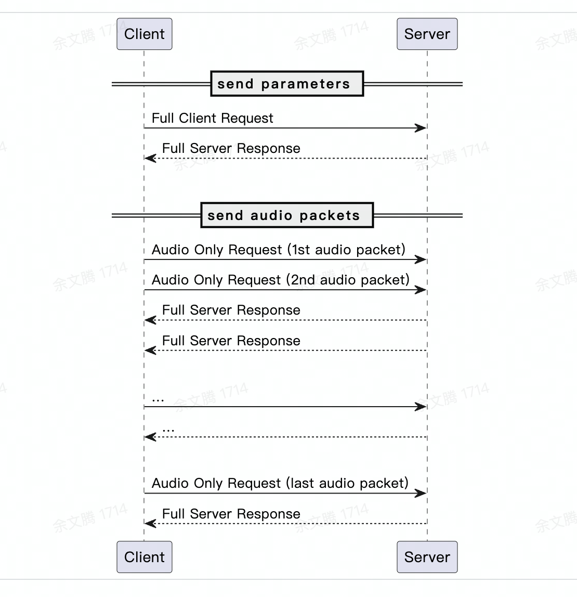

本文档介绍如何通过WebSocket协议实时访问大模型流式语音识别服务 (ASR)，主要包含鉴权相关、协议详情、常见问题和使用Demo四部分。
双向流式模式使用的接口地址是 wss://openspeech.bytedance.com/api/v3/sauc/bigmodel
流式输入模式使用的接口地址是 wss://openspeech.bytedance.com/api/v3/sauc/bigmodel_nostream
两者都是每输入一个包返回一个包，双向流式模式会尽快返回识别到的字符，速度较快。
流式输入模式会在输入音频大于15s或发送最后一包（负包）后返回识别到的结果，准确率更高。
无论是哪种模式，单包音频建议在100~200ms大小左右，不能过大或者过小，否则均会影响性能。
（注：针对双向流式模式，单包为200ms大小时性能最优，建议双向流式模式选取200ms大小的分包）
流式输入模式在平均音频时长5s时，可以做到300~400ms以内返回。
双向流式模式（优化版本）接口地址：wss://openspeech.bytedance.com/api/v3/sauc/bigmodel_async
该模式下，不再是每一包输入对应一包返回，只有当结果有变化时才会返回新的数据包
（性能优化 rtf 和首字、尾字时延均有一定程度提升）
双向流式版本，更推荐使用双向流式模式（优化版本），性能相对更优。
在 websocket 建连的 HTTP 请求头（Header 中）添加以下信息
Key | 说明 | Value 示例 |
|---|---|---|
X-Api-App-Key | 使用火山引擎控制台获取的APP ID，可参考 控制台使用FAQ-Q1 | 123456789 |
X-Api-Access-Key | 使用火山引擎控制台获取的Access Token，可参考 控制台使用FAQ-Q1 | your-access-key |
X-Api-Resource-Id | 表示调用服务的资源信息 ID，是固定值
| 小时版：volc.bigasr.sauc.duration |
X-Api-Connect-Id | 用于追踪当前连接的标志 ID，推荐设置UUID等 | 67ee89ba-7050-4c04-a3d7-ac61a63499b3 |
websocket 握手成功后，会返回这些 Response header。强烈建议记录X-Tt-Logid（logid）作为排错线索。
Key | 说明 | Value 示例 |
|---|---|---|
X-Api-Connect-Id | 用于追踪当前调用信息的标志 ID，推荐用UUID等 | 67ee89ba-7050-4c04-a3d7-ac61a63499b3 |
X-Tt-Logid | 服务端返回的 logid，建议用户获取和打印方便定位问题 | 202407261553070FACFE6D19421815D605 |
// 建连 HTTP 请求头示例 GET /api/v3/sauc/bigmodel Host: openspeech.bytedance.com X-Api-App-Key: 123456789 X-Api-Access-Key: your-access-key X-Api-Resource-Id: volc.bigasr.sauc.duration X-Api-Connect-Id: 随机生成的UUID ## 返回 Header X-Tt-Logid: 202407261553070FACFE6D19421815D605HTTP
交互流程

WebSocket 二进制协议
WebSocket 使用二进制协议传输数据。协议的组成由至少 4 个字节的可变 header、payload size 和 payload 三部分组成，其中 header 描述消息类型、序列化方式以及压缩格式等信息，payload size 是 payload 的长度，payload 是具体负载内容，依据消息类型不同 payload 内容不同。
需注意：协议中整数类型的字段都使用大端表示。
header 数据格式
Byte \ Bit | 7 | 6 | 5 | 4 | 3 | 2 | 1 | 0 |
|---|---|---|---|---|---|---|---|---|
0 | Protocol version | Header size | ||||||
1 | Message type | Message type specific flags | ||||||
2 | Message serialization method | Message compression | ||||||
3 | Reserved | |||||||
4 | [Optional header extensions] | |||||||
5 | [Payload, depending on the Message Type] | |||||||
6 | ... | |||||||
header 字段描述
字段 (size in bits) | 说明 | 值 |
|---|---|---|
Protocol version (4) | 将来可能会决定使用不同的协议版本，因此此字段是为了使客户端和服务器在版本上达成共识。 | 0b0001 - version 1 (目前只有该版本) |
Header (4) | Header 大小。实际 header 大小（以字节为单位）是 header size value x 4 。 | 0b0001 - header size = 4 (1 x 4) |
Message type (4) | 消息类型。 | 0b0001 - 端上发送包含请求参数的 full client request |
Message type specific flags (4) | Message type 的补充信息。 | 0b0000 - header后4个字节不为sequence number |
Message serialization method (4) | full client request 的 payload 序列化方法； | 0b0000 - 无序列化 |
Message Compression (4) | 定义 payload 的压缩方法； | 0b0000 - no compression |
Reserved (8) | 保留以供将来使用，还用作填充（使整个标头总计4个字节）。 |
请求流程
建立连接
根据 WebSocket 协议本身的机制，client 会发送 HTTP GET 请求和 server 建立连接做协议升级。
需要在其中根据身份认证协议加入鉴权签名头。设置方法请参考鉴权。
发送 full client request
WebSocket 建立连接后，发送的第一个请求是 full client request。格式是：
31 ... 24 | 23 ... 16 | 15 ... 8 | 7 ... 0 |
|---|---|---|---|
Header | |||
Payload size (4B, unsigned int32) | |||
Payload | |||
Header： 前文描述的 4 字节头。
Payload size： 是按 Header 中指定压缩方式压缩 payload 后的长度，使用大端表示。
Payload： 包含音频的元数据以及 server 所需的相关参数，一般是 JSON 格式。具体的参数字段见下表：
字段 | 说明 | 层级 | 格式 | 是否必填 | 备注 |
|---|---|---|---|---|---|
user | 用户相关配置 | 1 | dict | 提供后可供服务端过滤日志 | |
uid | 用户标识 | 2 | string | 建议采用 IMEI 或 MAC。 | |
did | 设备名称 | 2 | string | ||
platform | 操作系统及API版本号 | 2 | string | iOS/Android/Linux | |
sdk_version | sdk版本 | 2 | string | ||
app_version | app 版本 | 2 | string | ||
audio | 音频相关配置 | 1 | dict | ✓ | |
format | 音频容器格式 | 2 | string | ✓ | pcm / wav / ogg / mp3 |
codec | 音频编码格式 | 2 | string | raw / opus，默认为 raw(表示pcm) | |
rate | 音频采样率 | 2 | int | 默认为 16000，目前只支持16000 | |
bits | 音频采样点位数 | 2 | int | 默认为 16。 | |
channel | 音频声道数 | 2 | int | 1(mono) / 2(stereo)，默认为1。 | |
request | 请求相关配置 | 1 | dict | ✓ | |
model_name | 模型名称 | 2 | string | ✓ | 目前只有bigmodel |
model_version | 模型版本 | 2 | string | 传model_version = "400" 使用400模型效果，不传时为默认310模型效果。 | |
enable_nonstream | 开启二遍识别 | 2 | bool | 开启流式+非流式二遍识别模式：在一个接口里实现即双向流式实时返回逐字文本+流式输入模式（nostream）重新识别该分句音频片段提升准确率，既可以满足客户实时上屏需求（快），又可以在最终结果中保证识别准确率（准）。 | |
enable_itn | 启用itn | 2 | bool | 默认为true。 | |
enable_punc | 启用标点 | 2 | bool | 默认为true。 | |
enable_ddc | 启用顺滑 | 2 | bool | 默认为false。 | |
show_utterances | 输出语音停顿、分句、分词信息 | 2 | bool | ||
show_speech_rate（仅nostream接口支持，双向流式和二遍识别下不支持） | 分句信息携带语速 | 2 | bool | 如果设为"True"，则会在分句additions信息中使用speech_rate标记，单位为 token/s。默认 "False" | |
show_volume（仅nostream接口支持，双向流式和二遍识别下不支持） | 分句信息携带音量 | 2 | bool | 如果设为"True"，则会在分句additions信息中使用volume标记，单位为 分贝。默认 "False" | |
enable_lid（仅nostream接口支持，双向流式和二遍识别下不支持） | 启用语种检测 | 2 | bool | 目前能识别语种，且能出识别结果的语言：中英文、上海话、闽南语，四川、陕西、粤语
实际不支持识别的语种（无识别结果），但该参数可检测并输出对应lang_code。对应的标签如下：
| |
enable_emotion_detection（仅nostream接口支持，双向流式和二遍识别下不支持） | 启用情绪检测 | 2 | bool | 如果设为"True"，则会在分句additions信息中使用emotion标记, 返回对应的情绪标签。默认 "False"
| |
enable_gender_detection（仅nostream接口支持，双向流式和二遍识别下不支持） | 启用性别检测 | 2 | bool | 如果设为"True"，则会在分句additions信息中使用gender标记, 返回对应的性别标签（male/female）。默认 "False" | |
result_type | 结果返回方式 | 2 | string | 默认为"full",全量返回。 | |
vad_segment_duration | 语义切句的最大静音阈值 | 2 | int | 单位ms，默认为3000。当静音时间超过该值时，会将文本分为两个句子。不决定判停，所以不会修改definite出现的位置。在end_window_size配置后，该参数失效。 | |
end_window_size | 强制判停时间 | 2 | int | 单位ms，默认为800，最小200。静音时长超过该值，会直接判停，输出definite。配置该值，不使用语义分句，根据静音时长来分句。用于实时性要求较高场景，可以提前获得definite句子 | |
force_to_speech_time | 强制语音时间 | 2 | int | 单位ms，默认为10000，最小1。音频时长超过该值之后，才会判停，根据静音时长输出definite，需配合end_window_size使用。 | |
sensitive_words_filter | 敏感词过滤 | 2 | string | 敏感词过滤功能,支持开启或关闭,支持自定义敏感词。该参数可实现：不处理(默认,即展示原文)、过滤、替换为*。 | |
corpus | 语料/干预词等 | 2 | dict | ||
boosting_table_name | 自学习平台上设置的热词词表名称 | 3 | string | 热词表功能和设置方法可以参考文档 | |
boosting_table_id | 自学习平台上设置的热词词表id | 3 | string | 热词表功能和设置方法可以参考文档 | |
correct_table_name | 自学习平台上设置的替换词词表名称 | 3 | string | 替换词功能和设置方法可以参考文档 | |
correct_table_id | 自学习平台上设置的替换词词表id | 3 | string | 替换词功能和设置方法可以参考文档 | |
context | 热词或者上下文 | 3 | string |
"context":"{"hotwords":[{"word":"热词1号"}, {"word":"热词2号"}]}"
context_data字段按照从新到旧的顺序排列，传入需要序列化为jsonstring（转义引号）
|
参数示例：
{
"user": {
"uid": "388808088185088"
},
"audio": {
"format": "wav",
"rate": 16000,
"bits": 16,
"channel": 1,
"language": "zh-CN"
},
"request": {
"model_name": "bigmodel",
"enable_itn": false,
"enable_ddc": false,
"enable_punc": false,
"corpus": {
"boosting_table_id": "通过自学习平台配置热词的词表id",
},
"context": {
\"context_type\": \"dialog_ctx\",
\"context_data\":[
{\"text\": \"text1\"},
{\"text\": \"text2\"},
{\"text\": \"text3\"},
{\"text\": \"text4\"},
...
]
}
}
}
}
JSON发送 audio only request
Client 发送 full client request 后，再发送包含音频数据的 audio-only client request。音频应采用 full client request 中指定的格式（音频格式、编解码器、采样率、声道）。格式如下：
31 ... 24 | 23 ... 16 | 15 ... 8 | 7 ... 0 |
|---|---|---|---|
Header | |||
Payload size (4B, unsigned int32) | |||
Payload | |||
Payload 是使用指定压缩方法，压缩音频数据后的内容。可以多次发送 audio only request 请求，例如在流式语音识别中如果每次发送 100ms 的音频数据，那么 audio only request 中的 Payload 就是 100ms 的音频数据。
full server response
Client 发送的 full client request 和 audio only request，服务端都会返回 full server response。格式如下：
31 ... 24 | 23 ... 16 | 15 ... 8 | 7 ... 0 |
|---|---|---|---|
Header | |||
Sequence | |||
Payload size (4B, unsigned int32) | |||
Payload | |||
Payload 内容是包含识别结果的 JSON 格式，字段说明如下：
字段 | 说明 | 层级 | 格式 | 是否必填 | 备注 |
|---|---|---|---|---|---|
result | 识别结果 | 1 | list | 仅当识别成功时填写 | |
text | 整个音频的识别结果文本 | 2 | string | 仅当识别成功时填写。 | |
utterances | 识别结果语音分句信息 | 2 | list | 仅当识别成功且开启show_utterances时填写。 | |
text | utterance级的文本内容 | 3 | string | 仅当识别成功且开启show_utterances时填写。 | |
start_time | 起始时间（毫秒） | 3 | int | 仅当识别成功且开启show_utterances时填写。 | |
end_time | 结束时间（毫秒） | 3 | int | 仅当识别成功且开启show_utterances时填写。 | |
definite | 是否是一个确定分句 | 3 | bool | 仅当识别成功且开启show_utterances时填写。 |
{
"audio_info": {"duration": 10000},
"result": {
"text": "这是字节跳动， 今日头条母公司。",
"utterances": [
{
"definite": true,
"end_time": 1705,
"start_time": 0,
"text": "这是字节跳动，",
"words": [
{
"blank_duration": 0,
"end_time": 860,
"start_time": 740,
"text": "这"
},
{
"blank_duration": 0,
"end_time": 1020,
"start_time": 860,
"text": "是"
},
{
"blank_duration": 0,
"end_time": 1200,
"start_time": 1020,
"text": "字"
},
{
"blank_duration": 0,
"end_time": 1400,
"start_time": 1200,
"text": "节"
},
{
"blank_duration": 0,
"end_time": 1560,
"start_time": 1400,
"text": "跳"
},
{
"blank_duration": 0,
"end_time": 1640,
"start_time": 1560,
"text": "动"
}
]
},
{
"definite": true,
"end_time": 3696,
"start_time": 2110,
"text": "今日头条母公司。",
"words": [
{
"blank_duration": 0,
"end_time": 3070,
"start_time": 2910,
"text": "今"
},
{
"blank_duration": 0,
"end_time": 3230,
"start_time": 3070,
"text": "日"
},
{
"blank_duration": 0,
"end_time": 3390,
"start_time": 3230,
"text": "头"
},
{
"blank_duration": 0,
"end_time": 3550,
"start_time": 3390,
"text": "条"
},
{
"blank_duration": 0,
"end_time": 3670,
"start_time": 3550,
"text": "母"
},
{
"blank_duration": 0,
"end_time": 3696,
"start_time": 3670,
"text": "公"
},
{
"blank_duration": 0,
"end_time": 3696,
"start_time": 3696,
"text": "司"
}
]
}
]
},
"audio_info": {
"duration": 3696
}
}
JSONError message from server
当 server 发现无法解决的二进制/传输协议问题时，将发送 Error message from server 消息（例如，client 以 server 不支持的序列化格式发送消息）。格式如下：
31 ... 24 | 23 ... 16 | 15 ... 8 | 7 ... 0 |
|---|---|---|---|
Header | |||
Error message code (4B, unsigned int32) | |||
Error message size (4B, unsigned int32) | |||
Error message (UTF8 string) | |||
Header： 前文描述的 4 字节头。
Error message code： 错误码，使用大端表示。
Error message size： 错误信息长度，使用大端表示。
Error message： 错误信息。
示例
示例：客户发送 3 个请求
下面的 message flow 会发送多次消息，每个消息都带有版本、header 大小、保留数据。由于每次消息中这些字段值相同，所以有些消息中这些字段省略了。
Message flow:
client 发送 "Full client request"
version: b0001 (4 bits)
header size: b0001 (4 bits)
message type: b0001 (Full client request) (4bits)
message type specific flags: b0000 (use_specific_pos_sequence) (4bits)
message serialization method: b0001 (JSON) (4 bits)
message compression: b0001 (Gzip) (4bits)
reserved data: 0x00 (1 byte)
payload size = Gzip 压缩后的长度
payload: json 格式的请求字段经过 Gzip 压缩后的数据
server 响应 "Full server response"
version: b0001
header size: b0001
message type: b1001 (Full server response)
message type specific flags: b0001 (none)
message serialization method: b0001 (JSON 和请求相同)
message compression: b0001 (Gzip 和请求相同)
reserved data: 0x00
sequence: 0x00 0x00 0x00 0x01 (4 byte) sequence=1
payload size = Gzip 压缩后数据的长度
payload: Gzip 压缩后的响应数据
client 发送包含第一包音频数据的 "Audio only client request"
version: b0001
header size: b0001
message type: b0010 (audio only client request)
message type specific flags: b0000 (用户设置正数 sequence number)
message serialization method: b0000 (none - raw bytes)
message compression: b0001 (Gzip)
reserved data: 0x00
payload size = Gzip 压缩后的音频长度
payload: 音频数据经过 Gzip 压缩后的数据
server 响应 "Full server response"
message type: 0b1001 - Full server response
message specific flags: 0b0001 (none)
message serialization: 0b0001 (JSON, 和请求相同)
message compression 0b0001 (Gzip, 和请求相同)
reserved data: 0x00
sequence data: 0x00 0x00 0x00 0x02 (4 byte) sequence=2
payload size = Gzip 压缩后数据的长度
payload: Gzip 压缩后的响应数据
client 发送包含最后一包音频数据（通过 message type specific flags) 的 "Audio-only client request"，
message type: b0010 (audio only client request)
message type specific flags: b0010 (最后一包音频请求)
message serialization method: b0000 (none - raw bytes)
message compression: b0001 (Gzip)
reserved data: 0x00
payload size = Gzip 压缩后的音频长度
payload: Gzip 压缩后的音频数据
server 响应 "Full server response" - 最终回应及处理结果
message type: b1001 (Full server response)
message type specific flags: b0011 (最后一包音频结果)
message serialization method: b0001 (JSON)
message compression: b0001 (Gzip)
reserved data: 0x00
sequence data: 0x00 0x00 0x00 0x03 (4byte) sequence=3
payload size = Gzip 压缩后的 JSON 长度
payload: Gzip 压缩后的 JSON 数据
如处理过程中出现错误信息，可能有以下错误帧的返回
message type: b1111 (error response)
message type specific flags: b0000 (none)
message serialization method: b0001 (JSON)
message compression: b0000 (none)
reserved data: 0x00
Error code data: 0x2A 0x0D 0x0A2 0xff (4byte) 错误码
payload size = 错误信息对象的 JSON 长度
payload: 错误信息对象的 JSON 数据
错误码
错误码 | 含义 | 说明 |
|---|---|---|
20000000 | 成功 | |
45000001 | 请求参数无效 | 请求参数缺失必需字段 / 字段值无效 / 重复请求。 |
45000002 | 空音频 | |
45000081 | 等包超时 | |
45000151 | 音频格式不正确 | |
550xxxxx | 服务内部处理错误 | |
55000031 | 服务器繁忙 | 服务过载，无法处理当前请求。 |
Python：
![]()

Go：
Java：